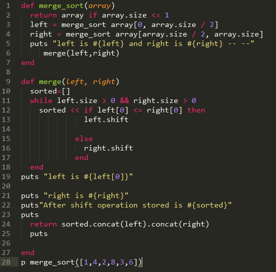
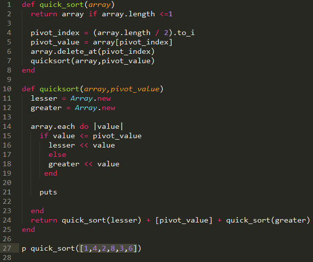
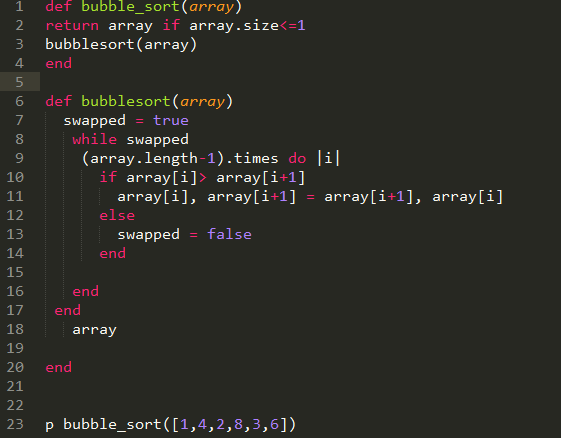

Sorting (merge sort, quick sort, bubble sort)
Created By Sagar Rathi
Date: 11/30/2014
Merge Sort
Mergesort is a divide and conquer algorithm that was invented by John von Neumann in 1945.Conceptually, a merge sort works as follows:
- Divide the unsorted list into n sublists, each containing 1 element (a list of 1 element is considered sorted).
- Repeatedly merge sublists to produce new sorted sublists until there is only 1 sublist remaining. This will be the sorted list.

Merge Sort Implementation

Quick Sort
The quicksort algorithm was developed in 1960 by Tony Hoare while in the Soviet Union, as a visiting student at Moscow State University.Quicksort is a divide and conquer algorithm. Quicksort first divides a large array into two smaller sub-arrays: the low elements and the high elements. Quicksort can then recursively sort the sub-arrays. Conceptually, a quick sort works as follows:
- Pick an element, called a pivot, from the array.
- Reorder the array so that all elements with values less than the pivot come before the pivot, while all elements with values greater than the pivot come after it (equal values can go either way). After this partitioning, the pivot is in its final position. This is called the partition operation.
- Recursively apply the above steps to the sub-array of elements with smaller values and separately to the sub-array of elements with greater values.
Quick Sort Implementation

Bubble Sort
Bubble sort, sometimes referred to as sinking sort, is a simple sorting algorithm that works by repeatedly stepping through the list to be sorted, comparing each pair of adjacent items and swapping them if they are in the wrong order. The pass through the list is repeated until no swaps are needed, which indicates that the list is sorted. The algorithm gets its name from the way smaller elements "bubble" to the top of the list. Because it only uses comparisons to operate on elements, it is a comparison sort

Merge Sort Implementation
